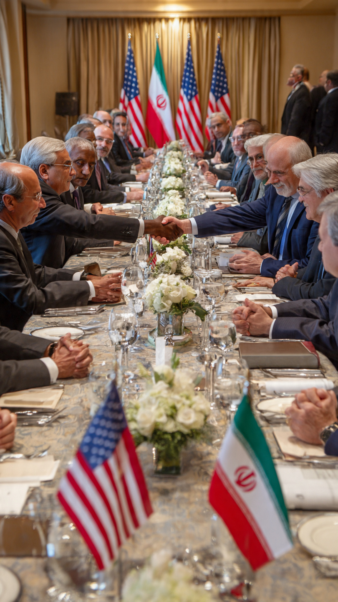

Global Tensions Rise After Failed Negotiations
In a significant geopolitical development in 2026, peace talks between the United States and Iran have officially collapsed after prolonged negotiations in Pakistan. The discussions, which lasted over 20 hours, were seen as a critical opportunity to reduce tensions in the Middle East. However, both sides failed to reach a consensus on key issues, particularly nuclear policies and regional security concerns.
The United States and Iran have had a complex and often tense relationship for decades. Previous agreements, including nuclear deals, aimed to limit Iran’s nuclear capabilities in exchange for economic relief. However, disagreements over compliance and enforcement have repeatedly caused breakdowns in negotiations.
The latest round of talks was organized in Pakistan as a neutral venue, with hopes of finding common ground. Diplomats and officials from both countries engaged in detailed discussions covering nuclear development, sanctions, and military activities in the region.
Despite initial optimism, several major issues led to the collapse of the talks. One of the primary points of disagreement was Iran’s nuclear program. The United States demanded stricter limitations and transparency, while Iran insisted on maintaining its sovereignty and technological advancements.
Additionally, regional security concerns played a significant role. Both countries accused each other of destabilizing activities in the Middle East. These disagreements created a deadlock that could not be resolved, even after extended discussions.
The failure of the peace talks has already begun to impact global markets and political dynamics. Investors are reacting cautiously, and there is increased volatility in financial markets worldwide. The uncertainty surrounding the situation has also led to a rise in oil prices, as the Middle East remains a crucial region for global energy supply.
Oil prices are particularly sensitive to geopolitical instability in the Middle East. With the collapse of the talks, fears of conflict escalation have increased, leading to speculation in energy markets. Higher oil prices can have a ripple effect on global economies, increasing transportation costs and inflation.
Countries that rely heavily on oil imports may face economic challenges, while energy-exporting nations could see short-term benefits. However, long-term instability is generally harmful to global economic growth.
The United States is expected to maintain a strong military presence in the region to ensure stability and protect its interests. This includes increased surveillance, strategic deployments, and cooperation with allied nations.
Iran, on the other hand, may continue to strengthen its defense capabilities and regional alliances. The lack of agreement raises the risk of misunderstandings or conflicts, which could escalate quickly if not managed carefully.
Although the talks have failed for now, diplomatic efforts are likely to continue. Both countries understand the importance of avoiding large-scale conflict, and international organizations may step in to facilitate further discussions.
Future negotiations could focus on smaller, incremental agreements to build trust over time. However, achieving a comprehensive deal will require significant compromises from both sides.
The collapse of the US–Iran peace t

alks is not just a regional issue—it has global implications. From economic stability to international security, the effects will be felt worldwide. Governments, businesses, and individuals must stay informed and prepared for potential changes.For everyday people, this could mean higher fuel prices, increased cost of living, and uncertainty in global markets. For policymakers, it presents a challenge to maintain peace and stability in an increasingly complex world.
Explore Trending ProductsThe failure of the US–Iran peace talks marks a critical moment in international relations. While the immediate outcome is disappointing, it also highlights the importance of continued dialogue and cooperation. The world will be watching closely as both nations decide their next steps.
In the coming months, the focus will be on whether diplomacy can prevail or if tensions will escalate further. Either way, this development serves as a reminder of how interconnected and fragile global peace can be.